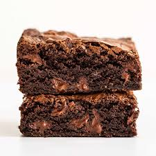

Brownies Recipe

Description
Decadent and simple.
What more could you need!?
Ingredients
- 250g Dark Chocolate
- 150g Unsalted Butter
- 200g Granulated Sugar
- 4 Large Eggs
- 60g All-Purpose Flour
- Pinch of Salt
- 1 teaspoon Vanilla Essence
- 100g Chopped Walnuts
Steps
- Preheat oven to 180°. Grease an 18x28cm baking tray with butter and line with parchment paper.
- Melt the chocolate and butter in the microwave in 30-second increments, stirring between each interval.
- In a separate bowl, whisk sugar, eggs, and the vanilla essence all together.
- Add flour and salt to the sugar mixture and stir until combined.
- Pour in the melted chocolate mixture and stir until smooth
- Fold in nuts.
- Pour batter into prepared baking dish and smooth top.
- Bake for 25-30 minutes or until a toothpick inserted comes out with a few moist crumbs.
- Let cool completely in the pan before cutting into squares and serving.
Enjoy your yummy treats!